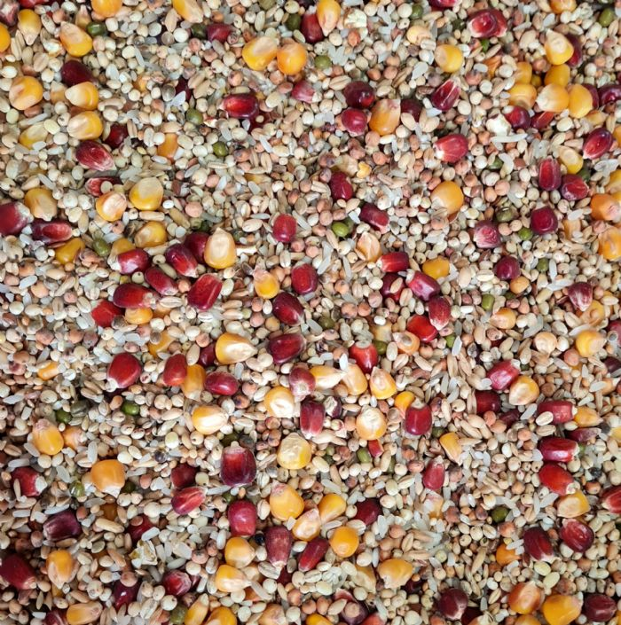
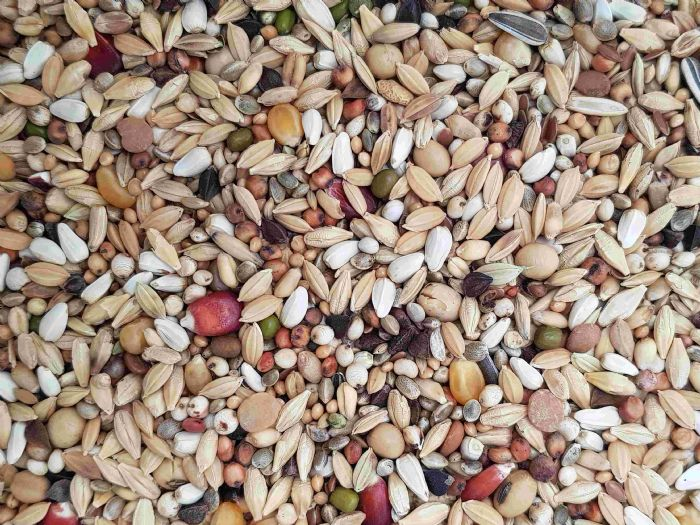
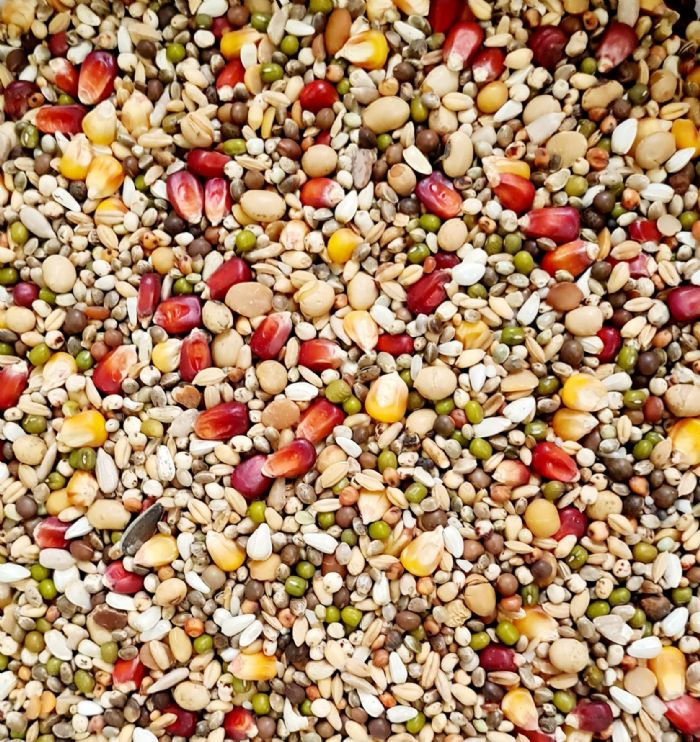
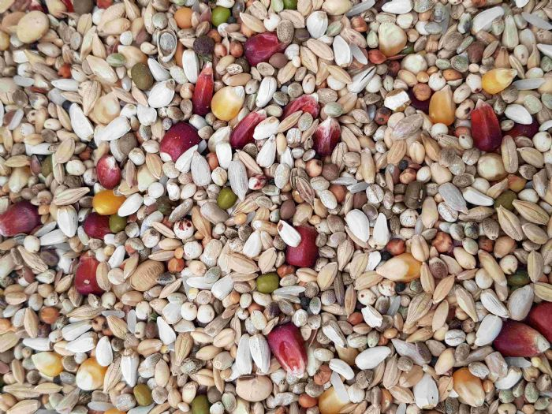
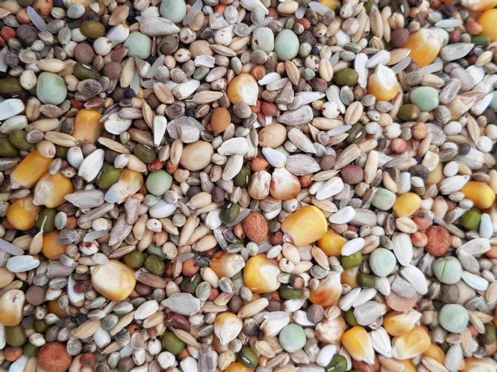
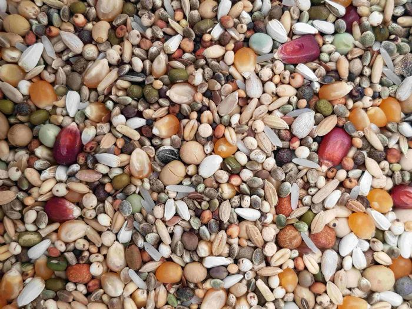
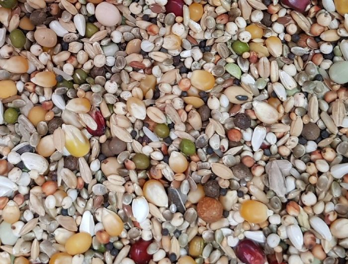
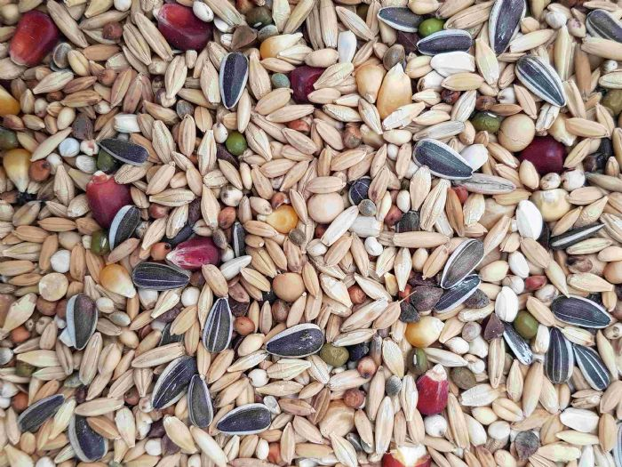
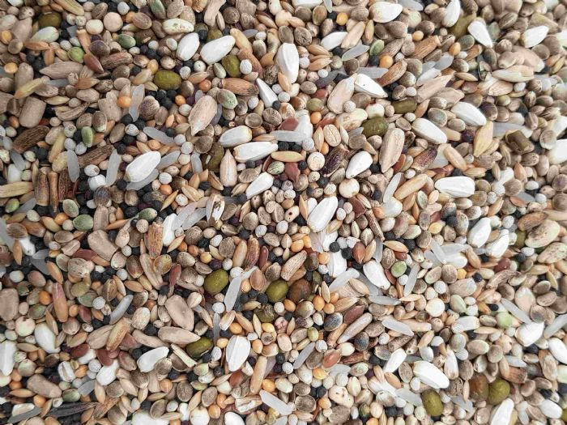

Tien mengelingen, tien profielen
Van een sprintmengeling met 67% koolhydraten tot een fondmengeling met 14,5% vet. Filter op fase en afstand, of vergelijk alles in één tabel.
Kies een fase. Voor vluchten kunt u ook op afstand verfijnen. Klik op een mengeling voor de volledige analyse.

AIDI Speedy Sprint
Nieuw
Extreem hoog koolhydraatgehalte voor snelheidsvluchten en alles met één nacht mand.
Ruw vet 4,6%
Ruw eiwit 10,5%
Koolhydraten 67,4%
Energie
3315
kcal/kg
Op koolhydraten vliegen duiven het snelst. AIDI Speedy Sprint vult de koolhydraattank volledig met makkelijk en snel verteerbare suikers die grote hoeveelheden onmiddellijk beschikbare energie leveren. Die hogere snelheid houden de duiven bovendien langer aan.
Te gebruiken op vluchten met één nacht mand, of die nu 50 of 350 km lang is. Alleen het doordeweekse voedingsplan verschilt naargelang de afstand; de opbouw van energie uit vetten gebeurt eerder in de week. Duiven die met een volle voorraadtank de mand ingaan vliegen vlotjes twee tot drie minuten per uur vlucht sneller.
Gebruiksaanwijzing
- Vluchten met 1 nacht mand: naar believen verstrekken op de dag van, en tot aan, de inkorving.
- Tip: wilt u de duiven flink laten doortrainen, geef ze 1 à 2 maaltijden AIDI Speedy Sprint.
Samenstelling
Bordeaux mais, cribbs mais, tarwe, gepelde gerst, rode millo, witte dari, gepelde haver, rondrijst, lijnzaad, kempzaad, millet, kanariezaad, katjang idjoe.
Analytische bestanddelen
- Ruw vet
- 4,6%
- Ruw eiwit
- 10,5%
- Opneembaar eiwit
- 6,2%
- Koolhydraten
- 67,4%
- Ruwe celstof
- 2,7%
- Omzetbare energie
- 3315 kcal/kg
- Omega-verhouding
- 5,9 : 1
Verkrijgbaar in

AIDI Mix 1
De lichte basismengeling van het vliegassortiment, van de kortste tot de langste afstand.
Ruw vet 7,3%
Ruw eiwit 12,4%
Koolhydraten 59,9%
Energie
3277
kcal/kg
Makkelijk verteerbaar, met een hoge opneembaarheid en weinig afvalstoffen bij verbranding. Duiven vliegen langer snel en herstellen bijzonder snel, waardoor u uw dieren intensiever kunt trainen en laten vliegen.
De aanwezige ruwvezel heeft een reinigende werking en houdt de darmflora in optimale conditie. Het hoge opneembare eiwitgehalte laat spieren snel recupereren, terwijl het relatief hoge vetgehalte meteen zorgt voor de energieopbouw naar de volgende vlucht toe.
Samenstelling
Bordeaux mais, cribbs mais, tarwe, gerst, rode milo, witte dari, paddy, cardy, lijnzaad, kempzaad, millet, kanariezaad, boekweit, katjang idjoe, getoaste soja.
Analytische bestanddelen
- Ruw vet
- 7,3%
- Ruw eiwit
- 12,4%
- Opneembaar eiwit
- 7,3%
- Koolhydraten
- 59,9%
- Ruwe celstof
- 7,1%
- Omzetbare energie
- 3277 kcal/kg
- Omega-verhouding
- 5,6 : 1

AIDI Mix 2
Kleine granen en peulen voor een betere verdeling en opneembaarheid. Tot 3 dagen voor de vlucht.
Ruw vet 11,4%
Ruw eiwit 15,2%
Koolhydraten 51,9%
Energie
3551
kcal/kg
De bewust gekozen granen en peulen van klein formaat zorgen voor een betere verdeling en opneembaarheid. Net als bij de andere mengelingen zorgt natuurlijk gedroogde mais, met een hoger aandeel suikers en zetmelen, voor een verhoogde voedingswaarde.
Wedstrijdduiven hebben een grote eiwitbehoefte, maar het is het opneembare eiwitgehalte dat telt, niet het ruwe. Een juiste balans tussen het aan de gang houden van de stofwisseling en het voorzien van de benodigde aminozuren is hier de sleutel tot succes.
Gebruiksaanwijzing
- Kan gegeven worden tot 3 dagen voor de vlucht.
Samenstelling
Bordeaux cribbs mais, kleine gele cribbsmais, tarwe, rode milo, witte dari, gepelde haver, rondrijst, cardi, lijnzaad, koolzaad, kempzaad, kanariezaad, katjang idjoe, getoaste soya, kleine groene erwten.
Analytische bestanddelen
- Ruw vet
- 11,4%
- Ruw eiwit
- 15,2%
- Opneembaar eiwit
- 8,1%
- Koolhydraten
- 51,9%
- Ruwe celstof
- 7,5%
- Omzetbare energie
- 3551 kcal/kg
- Omega-verhouding
- 3,5 : 1

AIDI Mix 3
Energierijk, met een hoog en gevarieerd aanbod aan vetzuren.
Ruw vet 13,5%
Ruw eiwit 13,9%
Koolhydraten 50,6%
Energie
3695
kcal/kg
Een bijzonder energierijke mengeling die onze atleten van de benodigde brandstof voorziet via een hoog en gevarieerd aanbod aan verschillende vetzuren.
Die vetzuren bouwen niet alleen de nodige vetreserves voor de vlucht op, ze maken de mengeling ook bijzonder geschikt om een zeer snel herstel bij thuiskomst te garanderen.
Gebruiksaanwijzing
- Afhankelijk van het aantal te voorziene vlieguren: te gebruiken van 1 tot 3 dagen voor de inkorving.
Samenstelling
Bordeauxmais, popcornmais, kleine cribbsmais, tarwe, rode milo, witte dari, gepelde haver, paddy, rondrijst, cardi, zonnepitten, gepelde zonnepitten, lijnzaad, raapzaad, kempzaad, millet, kanariezaad, katjang idjoe, getoaste soya.
Analytische bestanddelen
- Ruw vet
- 13,5%
- Ruw eiwit
- 13,9%
- Opneembaar eiwit
- 8,2%
- Koolhydraten
- 50,6%
- Ruwe celstof
- 7,9%
- Omzetbare energie
- 3695 kcal/kg
- Omega-verhouding
- 3,9 : 1

AIDI Girl Power
Speciaal ontworpen voor duivinnen met een intensief programma tussen 300 en 700 km.
Ruw vet 13,1%
Ruw eiwit 14,6%
Koolhydraten 49,8%
Energie
3622
kcal/kg
Een weloverwogen, wetenschappelijk verantwoorde mix van verschillende koolhydraat-, vet- en eiwitbronnen. Die zorgen voor een zeer makkelijk te verteren voer, een bijzonder hoge opneembaarheid en een verbranding met minder afvalstoffen. De duivin verteert de vele vliegkilometers zuiniger en economischer.
De aanwezige ruwe celstof zorgt voor een constant perfecte darmwerking. Daardoor blijven duivinnen het hele vliegseizoen makkelijk in optimale conditie en recupereren ze zeer snel, zelfs na de moeilijkste vluchten.
Samenstelling
Kleine cribsmais, bordeauxmais, popcornmais, tarwe, gerst, gepelde gerst, rode milo, witte dari, gepelde haver, paddy, rondrijst, kardi, gepelde zonnepitten, lijnzaad bruin, koolzaad, kempzaad, millet, kanariezaad, wikken, katjang idjoe, getoaste soya.
Analytische bestanddelen
- Ruw vet
- 13,1%
- Ruw eiwit
- 14,6%
- Opneembaar eiwit
- 8,4%
- Koolhydraten
- 49,8%
- Ruwe celstof
- 8,6%
- Omzetbare energie
- 3622 kcal/kg
- Omega-verhouding
- 5,6 : 1

AIDI Long Distance Mix
Ontwikkeld voor de verste afstanden en de overnachtfond.
Ruw vet 14,5%
Ruw eiwit 16,9%
Koolhydraten 47,1%
Energie
3713
kcal/kg
Elke discipline binnen een steeds meer gespecialiseerde duivensport vraagt een zeer specifieke voorbereiding. Duiven op de verste afstanden krijgen het vaak hard te verduren, en daar kunnen ze maar beter goed op voorbereid zijn.
AIDI Long Distance Mix staat garant voor een goede balans tussen de verschillende soorten koolhydraten, vetten en eiwitten. Dat is hier nog meer dan anders van cruciaal belang om het volledige potentieel en het volle rendement van uw duiven te kunnen benutten.
Samenstelling
Gele cribbsmais, tarwe, rode millo, witte dari, gepelde haver, paddy, rondrijst, cardy, gepelde zonnepitten, lijnzaad, raapzaad, koolzaad, kempzaad, millet, kanariezaad, wikken, kadjang idjoe, getoaste soya, maple peas, groene erwten.
Analytische bestanddelen
- Ruw vet
- 14,5%
- Ruw eiwit
- 16,9%
- Opneembaar eiwit
- 8,9%
- Koolhydraten
- 47,1%
- Ruwe celstof
- 8,2%
- Omzetbare energie
- 3713 kcal/kg
- Omega-verhouding
- 4,9 : 1

AIDI Super Kweek
Brengt de jongen groot én houdt de ouderdieren in uitstekende conditie.
Ruw vet 12,8%
Ruw eiwit 16,4%
Koolhydraten 49,1%
Energie
3608
kcal/kg
Het hoge, gediversifieerde opneembare eiwitgehalte levert alle benodigde bouwstoffen om jonge duiven probleemloos te laten opgroeien en hen alle kansen te geven uit te groeien tot sterke atleten.
De zorgvuldig uitgekozen vetrijke granen en zaden maken het voer licht verteerbaar. Samen met voldoende ruwe celstof houden ze de jongen én de ouderdieren in perfecte conditie, ook na meerdere kweekrondes. De samenstelling is zo afgestemd op kwekende duiven dat de ouderdieren het zonder verspilling opnemen en vlot afazen aan de jongen.
Samenstelling
Bordeauxmais, cribbs mais, tarwe, rode milo, witte dari, gepelde haver, paddy, rondrijst, kardi, gestreepte zonnepitten, gepelde zonnepitten, lijnzaad, raapzaad, hennep, millet, kanariezaad, wikken, katjang idjoe, getoaste soja, maple peas, groene erwten, gele erwten.
Analytische bestanddelen
- Ruw vet
- 12,8%
- Ruw eiwit
- 16,4%
- Opneembaar eiwit
- 8,8%
- Koolhydraten
- 49,1%
- Ruwe celstof
- 7,7%
- Omzetbare energie
- 3608 kcal/kg
- Omega-verhouding
- 3,2 : 1

AIDI Super Rui
Afgestemd op de verhoogde eiwitbehoefte tijdens de ruiperiode.
Ruw vet 13,0%
Ruw eiwit 15,1%
Koolhydraten 49,2%
Energie
3586
kcal/kg
De hoge opneembaarheid, de grote diversiteit aan benutbare eiwitten, de goede omega 3-6 verhouding en het specifiek voor de rui verhoogde aandeel aminozuren zorgen voor een uitstekende rui en een perfecte pluimkwaliteit.
Deze vernieuwde samenstelling is nog minder belastend voor de duif. Ze zorgt daardoor voor een constant optimale conditie en garandeert een vlekkeloze rui.
Samenstelling
Bordeaux mais, cribbs mais, tarwe, gerst, rode millo, witte dari, gepelde haver, paddy, cardy, zonnepitten, gepelde zonnepitten, lijnzaad, koolzaad, raapzaad, kempzaad, millet, kanariezaad, wikken, kadjang idjoe, getoaste soya, erwten.
Analytische bestanddelen
- Ruw vet
- 13,0%
- Ruw eiwit
- 15,1%
- Opneembaar eiwit
- 8,5%
- Koolhydraten
- 49,2%
- Ruwe celstof
- 8,6%
- Omzetbare energie
- 3586 kcal/kg
- Omega-verhouding
- 3,6 : 1

AIDI Winter / Rust
Voor na de ruiperiode, de wintermaanden en loszittende of opgesloten duiven.
Ruw vet 6,8%
Ruw eiwit 11,3%
Koolhydraten 61,3%
Energie
3259
kcal/kg
Veel ruwe celstof in de vorm van diverse ruwvezels zorgt ervoor dat de spijsvertering en de opname van voedingsstoffen optimaal blijven, met een reinigende werking.
De juiste verhoudingen en de aard van de aanwezige vetzuren, koolhydraten en eiwitten maken dat AIDI Winter/Rust probleemloos ongelimiteerd gevoederd kan worden zonder dat de duiven aanvetten.
Samenstelling
Paddy rijst, gerst, gele cribbs mais, gepunte haver, bordeaux cribbs mais, witte tarwe, gestreepte zonnepitten, milo corn rood, cardy, boekweit, lijnzaad, kempzaad, katjang idjoe, getoaste soyabonen.
Analytische bestanddelen
- Ruw vet
- 6,8%
- Ruw eiwit
- 11,3%
- Opneembaar eiwit
- 6,7%
- Koolhydraten
- 61,3%
- Ruwe celstof
- 6,3%
- Omzetbare energie
- 3259 kcal/kg
- Omega-verhouding
- 6,4 : 1

AIDI Extra Power Snoepmix
Snoepzaad als conditioneringsmiddel, met perilla- en mariadistelzaad.
Ruw vet 17,3%
Ruw eiwit 14,8%
Koolhydraten 37,2%
Energie
3588
kcal/kg
Duiven krijgen na de training vaak een handje snoepzaad. Ze eten die dingen graag, en dat maakt het uitstekend geschikt om onze dieren te conditioneren, op voorwaarde dat je er een uitgelezen en aanvullende mix van maakt.
Perilla- en mariadistelzaad hebben we bewust niet in de andere mengelingen gestoken, des te meer in deze. Geeft u elke duif na de training een snuifje, dan bent u zeker dat ieder dier zijn of haar dagelijkse portie verorbert. Door het hoge vetgehalte ook zeer geschikt als laatste toetje voor de inkorving.
Analytische bestanddelen
- Ruw vet
- 17,3%
- Ruw eiwit
- 14,8%
- Opneembaar eiwit
- 8,4%
- Koolhydraten
- 37,2%
- Ruwe celstof
- 9,0%
- Omzetbare energie
- 3588 kcal/kg
- Omega-verhouding
- 4,2 : 1
Verkrijgbaar in
Niets gevonden
Pas uw zoekopdracht of filters aan om meer resultaten te zien.
Alles vergelijken
Dezelfde zeven waarden voor alle tien de mengelingen. Klik op een kolomtitel om te sorteren.
| AIDI Speedy Sprint | 4,6% | 10,5% | 6,2% | 67,4% | 2,7% | 3315 | 5,9 : 1 |
| AIDI Mix 1 | 7,3% | 12,4% | 7,3% | 59,9% | 7,1% | 3277 | 5,6 : 1 |
| AIDI Mix 2 | 11,4% | 15,2% | 8,1% | 51,9% | 7,5% | 3551 | 3,5 : 1 |
| AIDI Mix 3 | 13,5% | 13,9% | 8,2% | 50,6% | 7,9% | 3695 | 3,9 : 1 |
| AIDI Girl Power | 13,1% | 14,6% | 8,4% | 49,8% | 8,6% | 3622 | 5,6 : 1 |
| AIDI Long Distance Mix | 14,5% | 16,9% | 8,9% | 47,1% | 8,2% | 3713 | 4,9 : 1 |
| AIDI Super Kweek | 12,8% | 16,4% | 8,8% | 49,1% | 7,7% | 3608 | 3,2 : 1 |
| AIDI Super Rui | 13,0% | 15,1% | 8,5% | 49,2% | 8,6% | 3586 | 3,6 : 1 |
| AIDI Winter / Rust | 6,8% | 11,3% | 6,7% | 61,3% | 6,3% | 3259 | 6,4 : 1 |
| AIDI Extra Power Snoepmix | 17,3% | 14,8% | 8,4% | 37,2% | 9,0% | 3588 | 4,2 : 1 |
Waar koopt u AIDI?
AIDI is verkrijgbaar bij ruim zestig verkooppunten en invoerders in elf landen. Of bel Eddy of Ivan rechtstreeks. Advies kost niets.